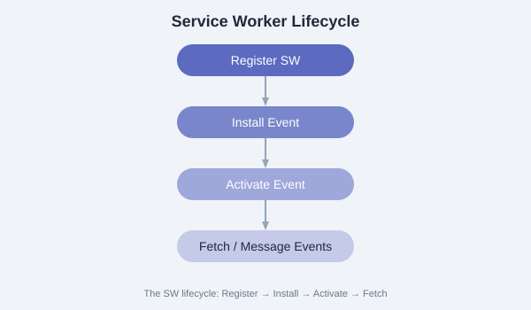

A Service Worker is a JavaScript file that runs in the background, separate from the web page. It acts as a programmable network proxy, intercepting network requests and enabling offline functionality.

// Register the Service Worker
if ('serviceWorker' in navigator) {
window.addEventListener('load', async () => {
try {
const registration = await navigator.serviceWorker.register('/sw.js', {
scope: '/' // Controls which pages the SW controls
});
console.log('SW registered:', registration.scope);
// Check for updates
registration.addEventListener('updatefound', () => {
const newWorker = registration.installing;
console.log('New SW found:', newWorker);
});
} catch (err) {
console.error('SW registration failed:', err);
}
});
}// sw.js - Full lifecycle example
const CACHE = 'my-pwa-v1';
// Install event
self.addEventListener('install', (event) => {
console.log('SW: Installing...');
event.waitUntil(
caches.open(CACHE).then(cache => {
return cache.addAll([
'/',
'/index.html',
'/css/styles.css',
'/js/app.js',
'/offline.html'
]);
})
);
self.skipWaiting();
});
// Activate event
self.addEventListener('activate', (event) => {
console.log('SW: Activating...');
event.waitUntil(
caches.keys().then(keys => {
return Promise.all(
keys.filter(key => key !== CACHE)
.map(key => caches.delete(key))
);
})
);
self.clients.claim();
});
// Fetch event - intercept network requests
self.addEventListener('fetch', (event) => {
event.respondWith(
caches.match(event.request)
.then(cached => {
// Return cached response or fetch from network
const fetchPromise = fetch(event.request).then(response => {
// Cache the new response
return caches.open(CACHE).then(cache => {
cache.put(event.request, response.clone());
return response;
});
});
return cached || fetchPromise;
})
);
});
// Message event - listen for messages from the page
self.addEventListener('message', (event) => {
if (event.data.type === 'SKIP_WAITING') {
self.skipWaiting();
}
});The scope option in registration defines which pages the Service Worker controls. By default, the scope is the directory containing the SW file. To expand scope, set the Service-Worker-Allowed HTTP header.